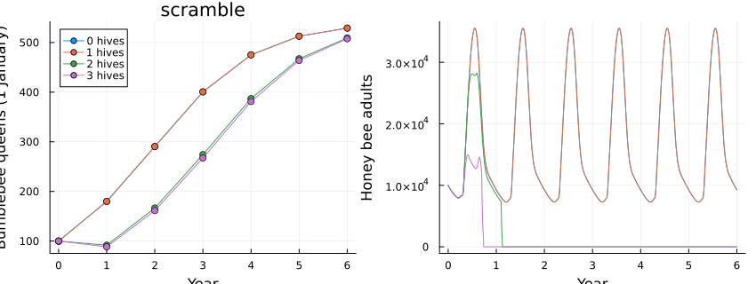
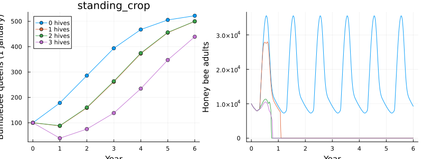
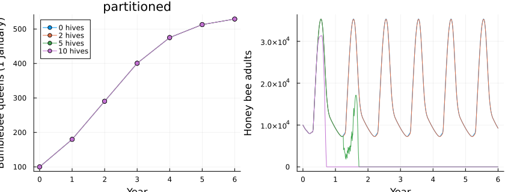
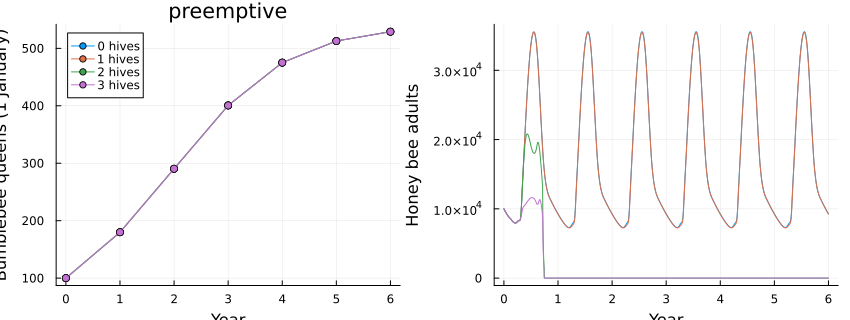
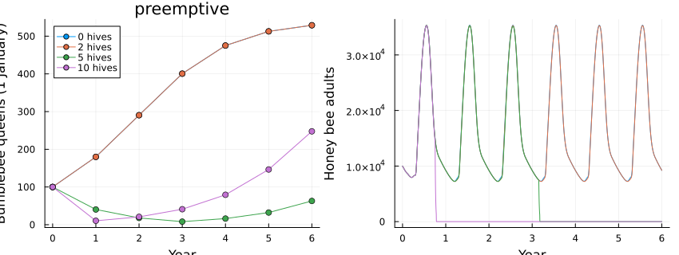
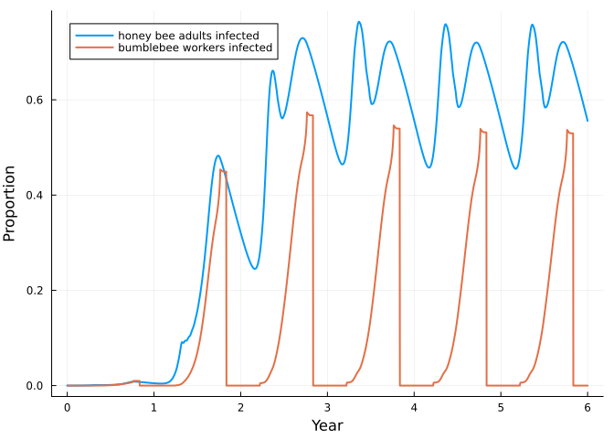

Bees 4: honey bees and bumblebees on the same flowers
Simon Frost
- Demand and supply are pools
- Four ways to compete
- When the flowers stop
- Virus on flowers
- What is provisional
- References
ENV["GKSwstype"] = "100"
using MatrixCommunityModels
using PlotsThe previous three vignettes built a honey bee colony with Varroa and deformed wing virus, and a bumblebee population. Neither refers to the other. This vignette joins them through two kinds of pool: what the flowers offer, and what infected foragers leave on them. Because the link is a pool and not a line of code inside either species, it can be swapped: four different ideas of competition are four different couplings of the same two models.
Demand and supply are pools
Each species reports how much nectar and pollen its foragers would collect today (the pools hb_nectar, hb_pollen, bb_nectar, bb_pollen) and receives the fraction of that demand the flowers can meet. floral_competition supplies the rule; the supply itself is a function of the day of the year, in grams per square kilometre per day.
function landscape(mode; hives = 1, years = 6, virus = false, treated = true, kw...)
forage = floral_competition(mode; hives = hives, kw...)
flowers = virus ? flower_transmission(hives = hives) : nothing
treatment = treated ? (day -> 270 <= day < 310 ? 0.115 : 0.0) : (day -> 0.0)
c = community(honeybee(virus = virus, forage = forage, flowers = flowers),
varroa(virus = virus, treatment = treatment),
bumblebee(virus = virus, forage = forage, flowers = flowers), forage.species...)
n0 = honeybee_state(c; mites = virus ? 100 : 0, viral = virus ? 0.1 : 0.0, queens = 100)
return c, project(c, n0, 1:(365 * years))
end
c, alone = landscape(:scramble; hives = 0)
species_names(c), pool_names(c)([:honeybee, :varroa, :bumblebee], [:adult_bees, :capping, :emerging, :hb_nectar, :hb_pollen, :bb_nectar, :bb_pollen, :phoretic])hives is the number of honey bee colonies per square kilometre, each like the one modelled. One colony takes far more than the whole bumblebee population:
day = 365 + 190
totals = pool_totals(c, alone.u[day + 1, :], day)
(honey_bee_colony = (nectar = round(totals.hb_nectar), pollen = round(totals.hb_pollen)),
bumblebees = (nectar = round(totals.bb_nectar), pollen = round(totals.bb_pollen)))(honey_bee_colony = (nectar = 0.0, pollen = 0.0), bumblebees = (nectar = 49.0, pollen = 17.0))(With hives = 0 the colony’s demand is reported as zero; multiply by one for a single colony.)
_, one = landscape(:scramble; hives = 1)
totals_one = pool_totals(landscape(:scramble; hives = 1)[1], one.u[day + 1, :], day)
round(totals_one.hb_nectar / totals_one.bb_nectar; digits = 1)36.7That ratio is why competition between the two is so asymmetric: bumblebees cannot deplete a landscape that feeds honey bees, but honey bees can deplete one that feeds bumblebees.
Four ways to compete
queens(sol) = stage_total(sol, :bumblebee, :hibernating)[365 .* (0:6) .+ 1]
workers(sol) = stage_total(sol, :honeybee, [:hive, :forager])
function compare(mode, densities; kw...)
runs = [landscape(mode; hives = h, kw...)[2] for h in densities]
p1 = plot(0:6, reduce(hcat, queens.(runs)); label = permutedims(["$h hives" for h in densities]), marker = :circle,
xlabel = "Year", ylabel = "Bumblebee queens (1 January)", title = String(mode), legend = :topleft)
p2 = plot(runs[1].t ./ 365, reduce(hcat, workers.(runs)); label = "", xlabel = "Year", ylabel = "Honey bee adults")
plot(p1, p2; layout = (1, 2), size = (850, 320))
end
densities = [0, 1, 2, 3]4-element Vector{Int64}:
0
1
2
3Scramble. Everyone gets the same fraction of what they ask for: min(1, supply / total demand).
compare(:scramble, densities)
Standing crop. The supply is a stock that flowers refill each day and from which half of what is not taken carries over. Heavy use today leaves less tomorrow. This adds a flowers species to the community.
compare(:standing_crop, densities)
Partitioned. Half of the supply is open to both; the rest is split into flowers only honey bees use and flowers only bumblebees use.
compare(:partitioned, densities)
Pre-emptive. Honey bees, which recruit nestmates to rich patches, take what they want first; bumblebees get what is left, plus a refuge of deep flowers that honey bees cannot use. With a refuge of 20%, and with none:
compare(:preemptive, densities)
compare(:preemptive, densities; refuge = 0.0)
The four couplings tell different stories from the same two species:
final(mode; kw...) = [round(queens(landscape(mode; hives = h, kw...)[2])[end]; digits = 0) for h in densities]
(hives = densities, scramble = final(:scramble), standing_crop = final(:standing_crop),
partitioned = final(:partitioned), preemptive = final(:preemptive), preemptive_no_refuge = final(:preemptive; refuge = 0.0))(hives = [0, 1, 2, 3], scramble = [529.0, 529.0, 509.0, 508.0], standing_crop = [522.0, 500.0, 500.0, 439.0], partitioned = [529.0, 529.0, 529.0, 529.0], preemptive = [529.0, 529.0, 529.0, 529.0], preemptive_no_refuge = [529.0, 363.0, 171.0, 10.0])Three things stand out. Where bumblebees have any flowers of their own, a partition or a refuge, honey bees do them no harm in this model, because their demand is so small that a small exclusive share covers it. Where everything is shared, bumblebees are set back only once the hives are themselves short of forage, and then the hives suffer first: identical colonies all run out of honey together and die within a year or two, after which the bumblebees recover almost completely. Where honey bees take first and there is no refuge, bumblebees decline in step with the number of hives and are nearly driven out at three.
These are consequences of the couplings, not findings about real landscapes. The field evidence is mixed in the same way: reviews find negative effects on wild bees in about half of studies, concentrated where floral resources are scarce.
When the flowers stop
Bumblebees keep no stores, so when forage is available matters more to them than to honey bees. Ending the season’s forage two months early, with one hive:
supply(finish) = (nectar = floral_supply(3000.0; finish = finish), pollen = floral_supply(400.0; finish = finish))
_, usual = landscape(:scramble; hives = 1, supply(280)...)
_, short = landscape(:scramble; hives = 1, supply(220)...)
(bumblebee_queens = (usual = round(queens(usual)[end]), short_season = round(queens(short)[end])),
honey_bee_peak = (usual = round(maximum(workers(usual)[(365 * 5):end])), short_season = round(maximum(workers(short)[(365 * 5):end]))))(bumblebee_queens = (usual = 529.0, short_season = 468.0), honey_bee_peak = (usual = 35507.0, short_season = 35221.0))The hive, which lives on its stores, is unaffected. The bumblebee population ends lower: colonies founded by late-emerging queens are still rearing brood when the forage stops.
Virus on flowers
The second kind of pool carries the virus. Infected honey bee foragers report their flower visits to infectious_visits; the fraction of flowers contaminated is 1 - exp(-visits / flowers), so more flowers dilute it; and a bumblebee worker is infected with a daily probability that rises with contamination. Bumblebees have no mites, do not (by default) pass the virus on, and are not harmed by it unless infected_hazard is raised.
cv, spill = landscape(:scramble; hives = 1, virus = true, treated = false)
bb_prev = stage_total(spill, :bumblebee, :infected_worker) ./
max.(stage_total(spill, :bumblebee, [:worker, :infected_worker]), 1e-9)
hb_prev = stage_total(spill, :honeybee, [:hive_infected, :forager_infected]) ./ max.(workers(spill), 1.0)
plot(spill.t ./ 365, [hb_prev bb_prev]; label = ["honey bee adults infected" "bumblebee workers infected"],
xlabel = "Year", ylabel = "Proportion", lw = 2)
summer = 365 .* (0:5) .+ 200
[(year = y, honey_bees = round(hb_prev[d]; digits = 2), bumblebees = round(bb_prev[d]; digits = 2)) for (y, d) in enumerate(summer)]6-element Vector{@NamedTuple{year::Int64, honey_bees::Float64, bumblebees::Float64}}:
(year = 1, honey_bees = 0.0, bumblebees = 0.0)
(year = 2, honey_bees = 0.14, bumblebees = 0.08)
(year = 3, honey_bees = 0.77, bumblebees = 0.28)
(year = 4, honey_bees = 0.83, bumblebees = 0.23)
(year = 5, honey_bees = 0.83, bumblebees = 0.22)
(year = 6, honey_bees = 0.83, bumblebees = 0.24)Bumblebee prevalence follows the hive’s, with no route of its own: when the hive is treated for mites, the virus all but disappears from both.
_, treated = landscape(:scramble; hives = 1, virus = true, treated = true)
maximum(stage_total(treated, :bumblebee, :infected_worker) ./
max.(stage_total(treated, :bumblebee, [:worker, :infected_worker]), 1e-9))0.008881983331943922In a field survey, DWV was found in 36% of honey bees and 11% of bumblebees at the same sites, and was far more prevalent in both where Varroa was present (Fürst et al. 2014; Manley et al. 2019). The acquisition rate here was chosen to give a ratio of that order; it is not measured.
What is provisional
Everything about the couplings is a modelling choice: the supply (3 kg of sugar and 0.4 kg of pollen per square kilometre per day), the conversion from honey gained to sugar removed, the carry-over of the standing crop, the overlap and refuge fractions, and the transmission parameters. The evidence on competition and on DWV in bumblebees used to frame them comes from review summaries, not from the primary papers. What the vignette shows is that the alternatives can be stated, swapped and compared without touching either species’ model.
References
Fürst, M. A. et al. (2014). Nature 506, 364-366. Manley, R. et al. (2019). Ecology Letters 22, 1306-1315. Mallinger, R. E., Gaines-Day, H. R. & Gratton, C. (2017). PLoS ONE 12, e0189268. Lytle, D. A. & Tonkin, J. D. (2023). npj Biodiversity 2, 26.